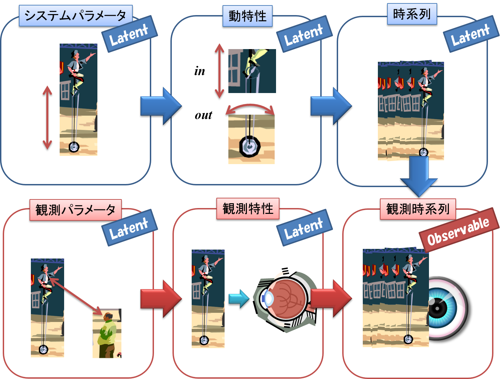
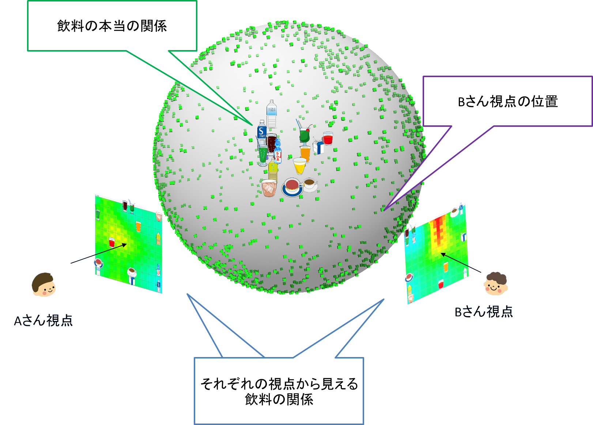
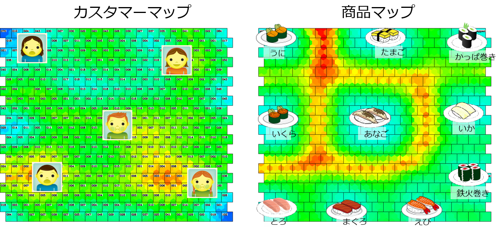
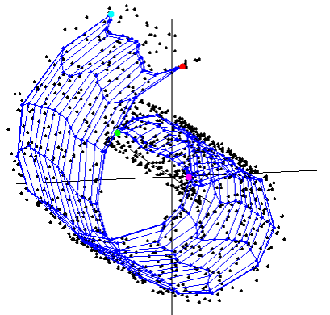

現在取り組んでいる研究テーマ
現在，本研究室で取り組んでいる研究テーマは大きく３つの領域に分かれます．1.知能情報処理の学習理論とアルゴリズム開発
2.多面的データ分析を行うアルゴリズム開発と実応用
3.隠れた本質を見つける学習理論とアルゴリズム開発
- 1．知能情報処理の学習理論とアルゴリズム開発 ひとくちに知能的情報処理といっても非常に幅が広いのですが，本研究室では特にマルチタスク・マルチビュー学習を中心テーマに据えて， そのアルゴリズム開発と学習理論の究明に取り組んでいます．私たちはこれら２つが知能の本質に迫る重要な鍵を握っていると考えています．
マルチタスク学習とは，複数タスクの学習を通して共通するルールや法則性を発見したり，タスク間で知識転移をしたり， さらには新規タスクに対して柔軟に対応したりする学習能力のことです．ざっくり言えば「経験からタスクのコツを見つけること*」とも言えます．
いっぽうマルチビュー学習とは，複数の観測データを統合して観測対象の真の姿を知るとともに，それぞれの観測の相互関係， すなわち視点も推定する学習のことです．「観測を通して観測者自身を知ること*」と言ってもいいかもしれません．
* マルチタスク学習，マルチビュー学習という用語はさまざまな異なる概念を含んでいます．ここでの説明は本研究室での位置づけです．
コミュニティのメンバーが互いに互いを観察しあう状況では，マルチタスク学習とマルチビュー学習が同時に起きます． マルチタスク・マルチビュー学習を研究は，コミュニケーションを通して他者と自己を知る知能の研究につながると私たちは考えています．


- 2．多面的データ分析を行うアルゴリズム開発と実応用 観測データはしばしば複数の要因の組み合わせから得られます．たとえばオンラインショップでの商品評価データは， 商品とユーザーの組み合わせで決まります．このようなデータを関係データと呼びます．関係データの分析では多面的な同時分析が不可欠です． 商品評価データの場合ならば，商品分析，ユーザー分析，そして商品－ユーザー関係分析の３つを行う必要があります． このような多面的データ分析を行うアルゴリズムの開発が本研究室のもうひとつのメインテーマです．
関係データはさまざまな場面で現れます．たとえば人間同士の関係や，チームとメンバーの関係も関係データとして扱えます． したがってSNSでのコミュニティ分析やチームスポーツの成績分析，職場のコミュニケーション分析などにも応用できます． 最近話題のビッグデータ解析にも必要となる技術です．また上で述べたマルチタスク・マルチビュー学習などの基盤技術としても使われる重要な研究テーマなのです．
関係データ分析の基本はテンソル解析です．本研究室では潜在空間法とテンソル解析を組み合わせたアルゴリズム開発を行っています． 特に自己組織化マップ (SOM) とテンソル解析を組み合わせたTensor SOM はパワフルな多面的データ分析法を提供します． わたしたちはTensor SOMをさらに発展させ，複雑で大規模なデータに潜む知識を発見するアルゴリズムの開発に取り組んでいます．

- 3．隠れた本質を見つける学習理論とアルゴリズム開発 知能情報処理ではしばしば，直接観測できないものを知る必要が生じます． たとえば上で述べたマルチタスク・マルチビュー学習で推定する「コツ」や「視点」も直接観測することができません． データに隠れている「見えない本質」を発見することは知能情報処理の大事な一面です． またマーケティングデータから顧客の嗜好や商品との相性を読み取ることも「見えない本質」を発見することと言えます．
直接観測できない変数や空間のことを「潜在変数」「潜在空間」と言います． これらを観測データから推定するアルゴリズムを潜在空間法と言います． 中でも自己組織化マップ (Self-Organizing Map: SOM) は広く使われている潜在空間法で，潜在空間を地図として可視化してくれます（→ SOM）． 本研究室ではSOMをはじめとする潜在空間法の研究を通して「見えないものを見る」学習理論に迫るとともに，マルチタスク・マルチビュー学習などに組み込んでいきます．
